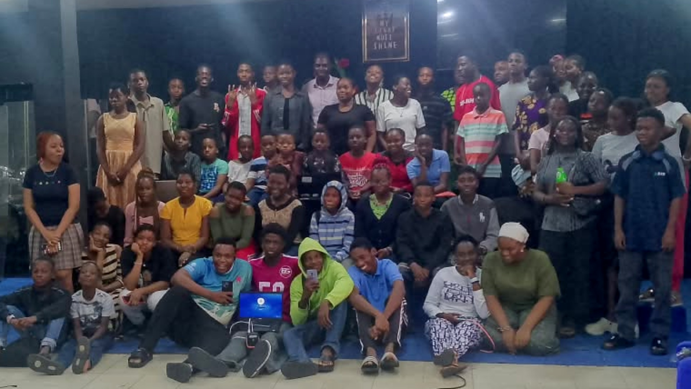
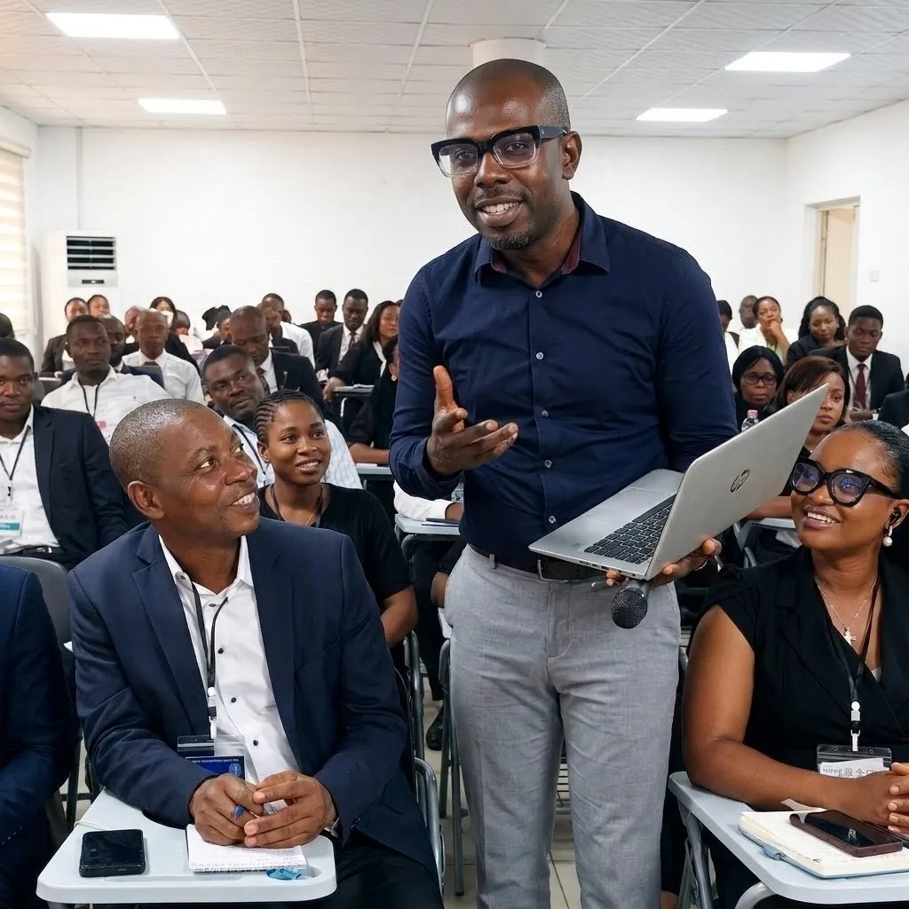

Completed 28 August 2026
August 2026 AI Bootcamp
A dated first-party record with the closing group photograph, professional recap video, context and clear limits on what the evidence supports.
View bootcamp evidence ->Success stories
Documented training, AI adoption, automation, education, business productivity, and organisational technology engagements.

Completed 28 August 2026
A dated first-party record with the closing group photograph, professional recap video, context and clear limits on what the evidence supports.
View bootcamp evidence ->
AI and automation training
Regions 33, 5 and 55 took part in a two-day practical training on AI, automation, research, reporting, presentations, and digital productivity for church administration.
Read success story ->Guided AI practice
A documented look at live demonstrations, supervised laptop work, learner collaboration, direct coaching and project explanation.
Read field story ->What a proof page contains
A useful success story explains who the engagement served, what participants were expected to learn, how the programme was delivered, and what evidence is available. It should not turn attendance into an invented performance claim.
JENECONK uses real classroom photographs, programme details, exercises, and participant activity to show that delivery took place. Where a measurable outcome or testimonial is published, it should be attributable and approved for public use.
The current featured story documents a live two-day administrators programme. Additional stories will be added only when enough verified material exists to explain the engagement responsibly.
Training in practice
JENECONK programmes are structured around practical use: the facilitator demonstrates a workflow, participants try it with guidance, questions are resolved, and the group connects the technique to its real administrative or professional responsibilities.